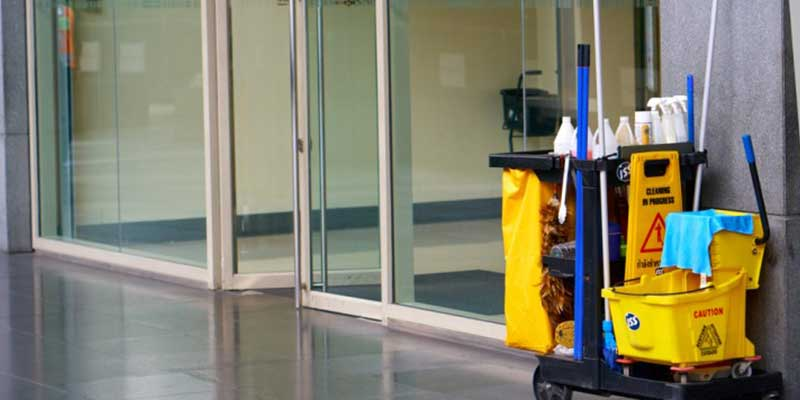
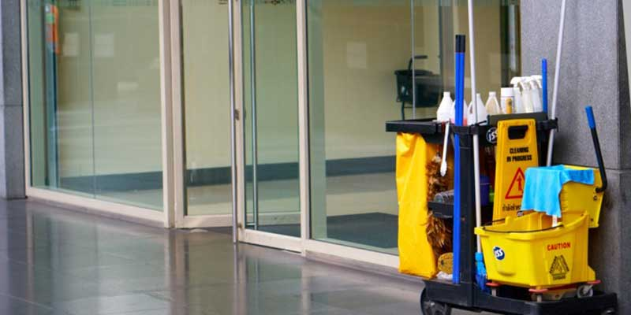
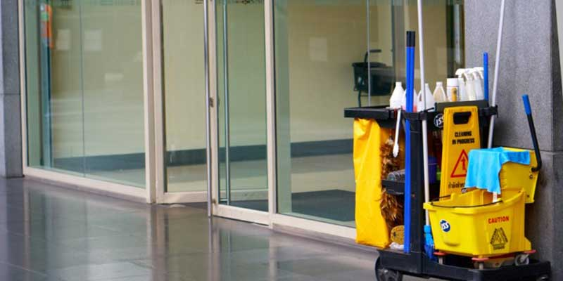
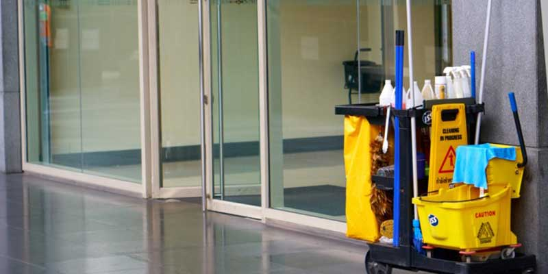

Day Porter Service
Day Porter, Trash Can Service, Parking Lot Cleaning
Having a reliable and thorough day porter service at your location helps eliminate the trash and
debris found in your parking lot and in your landscape areas.
The consistent maintenance and upkeep of your location matters to your community, tenants, patrons
and even those simply passing by. The cleanliness of your location impacts property value, tenant
satisfaction, patron confidence and more.
It is also important that your garbage receptacles are emptied regularly, new liners are installed,
and the receptacles are wiped down and disinfected.
Our porter service can be provided during the day, evenings or overnight depending on your
preference.
Also included in our day porter service are all of the following:
Our porter and trash can service also includes us walking your entire property and picking up all trash and debris from:
Give us a call today at (412) 501-1000
We locate, pick up and dispose of all trash, no matter how big or small.
Day Porter Service PittsburghThis exterior parking lot maintenance service is a necessity for shopping
centers, shopping malls, retail centers, plazas, strip malls, office complexes and more.
We provide this service for both large and small commercial locations. Some locations we clean as little
as once a week and other locations we provide our service as often as seven days per week.